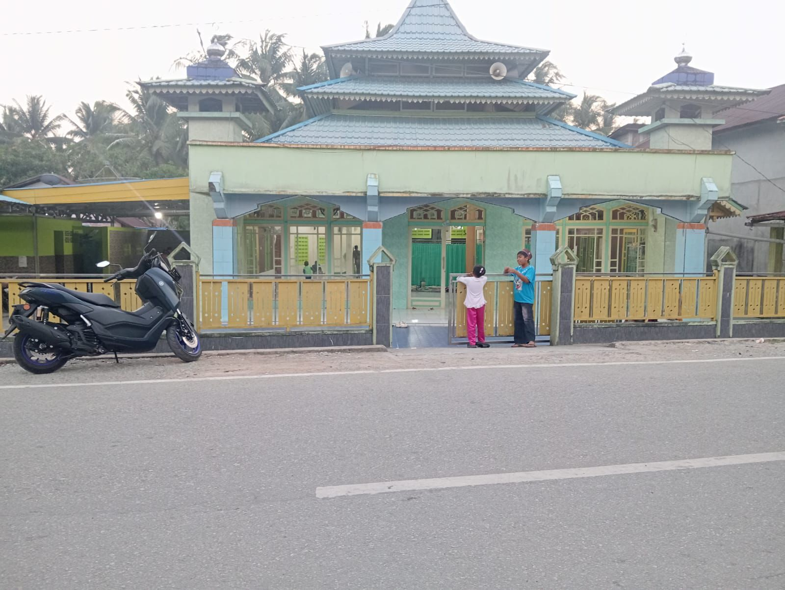
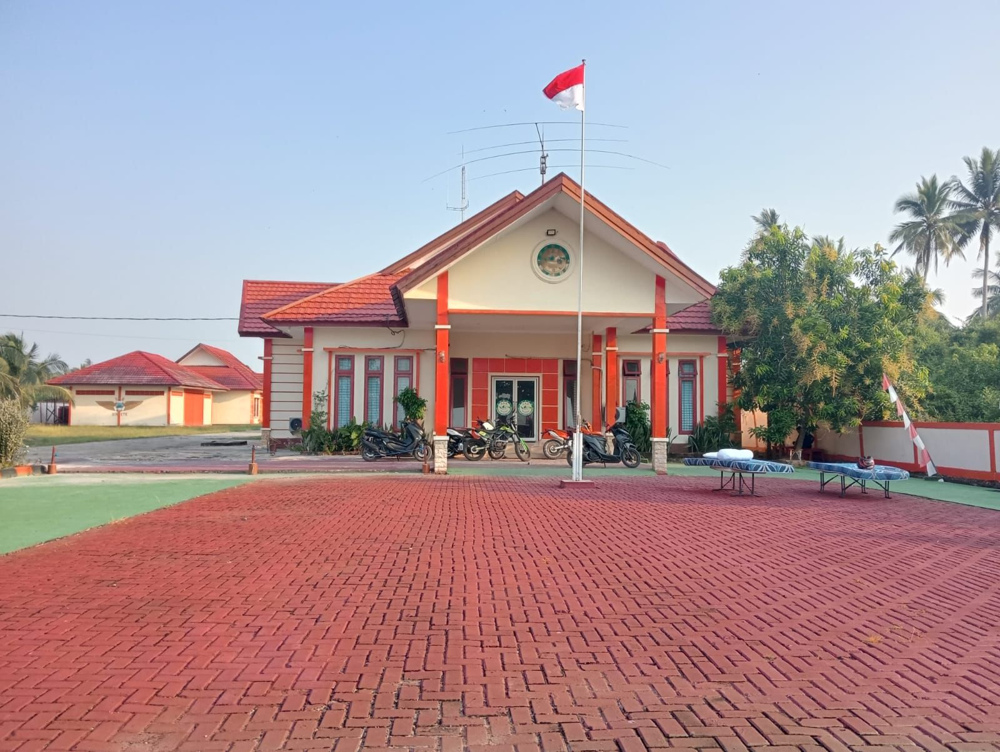
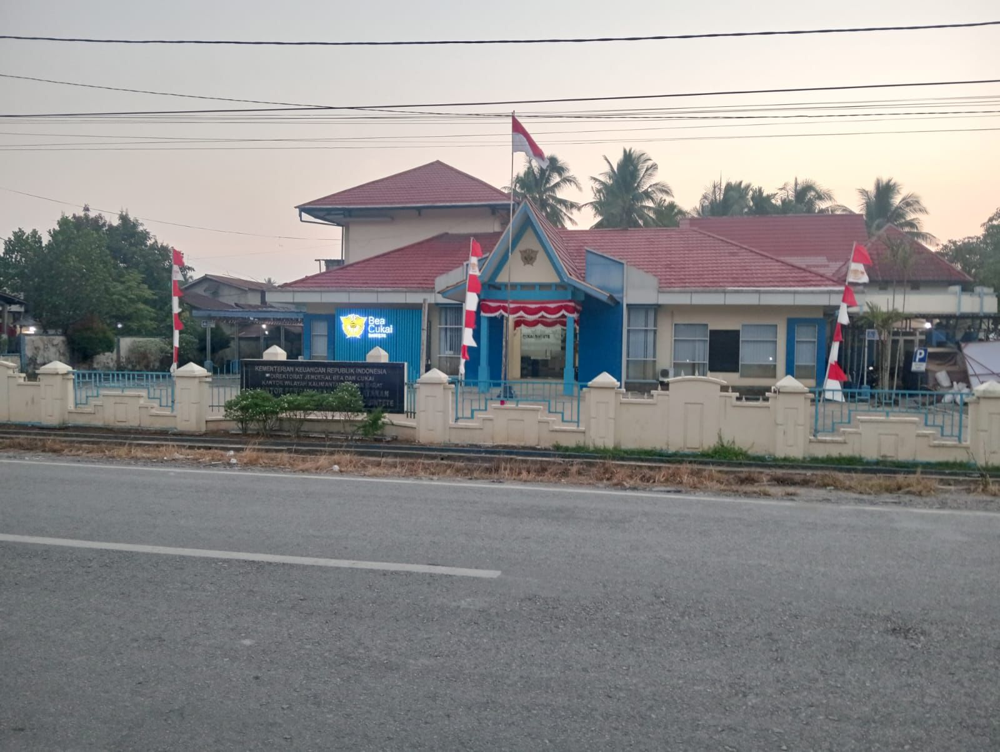

04 / Galeri
Galeri Sintete
Dokumentasi sederhana tentang jalan, lingkungan, fasilitas, dan kawasan pelabuhan Sintete.





Dokumentasi sederhana tentang jalan, lingkungan, fasilitas, dan kawasan pelabuhan Sintete.


